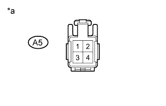
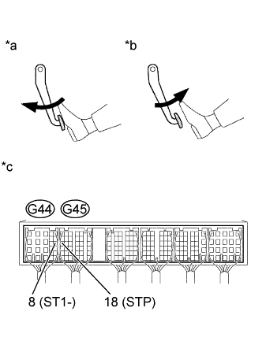

DTC P0504 Brake Switch "A" / "B" Correlation |
| Tester Display | Brake Pedal Released | In Transition | Brake Pedal Depressed |
| STP | OFF | ON | ON |
| ST1 | OFF | OFF | ON |
| DTC No. | DTC Detection Condition | Trouble Area |
| P0504 | Conditions (a), (b) and (c) continue for 0.5 seconds or more (1 trip detection logic): (a) Engine switch is on (IG). (b) Brake pedal is released. (c) STP signal is OFF when the ST1- signal is OFF. |
|
| Brake Pedal Operation | Specified Condition |
| Depressed | STP signal ON |
| Released | STP signal OFF |
| 1.READ VALUE USING INTELLIGENT TESTER (STOP LIGHT SWITCH) |
Connect the intelligent tester to the DLC3.
Turn the engine switch on (IG).
Turn the tester on.
Enter the following menus: Powertrain / Engine and ECT / All Data / Stop Light Switch.
Read the value displayed on the tester.
| Condition | Specified Condition |
| Brake pedal depressed | STP signal ON |
| Brake pedal released | STP signal OFF |
|
| ||||
| OK | ||
| ||
| 2.INSPECT STOP LIGHT SWITCH ASSEMBLY (B+ VOLTAGE) |
|  |
Disconnect the stop light switch connector.
Measure the voltage according to the value(s) in the table below.
| Tester Connection | Condition | Specified Condition |
| A5-2 - Body ground | Always | 11 to 14 V |
| A5-4 - Body ground | Engine switch on (IG) | 11 to 14 V |
| *a | Front view of wire harness connector (to Stop Light Switch) |
|
| ||||
| OK | |
| 3.INSPECT STOP LIGHT SWITCH ASSEMBLY |
Inspect the stop light switch assembly (Click here).
|
| ||||
| OK | |
| 4.INSPECT ECM (STP AND ST1 - VOLTAGE) |
|  |
Disconnect the ECM connector.
Turn the engine switch on (IG).
Measure the voltage according to the value(s) in the table below.
| Tester Connection | Condition | Specified Condition |
| G44-8 (ST1-) - Body ground | Brake pedal released | 11 to 14 V |
| Brake pedal depressed | 0 to 3 V | |
| G45-18 (STP) - Body ground | Brake pedal released | 0 to 3 V |
| Brake pedal depressed | 11 to 14 V |
| *a | Depressed |
| *b | Released |
| *c | Component with harness connected (ECM) |
|
| ||||
| OK | ||
| ||